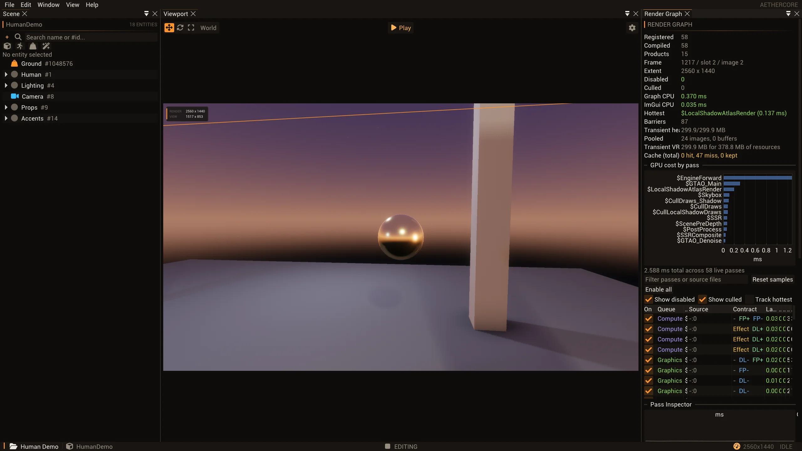
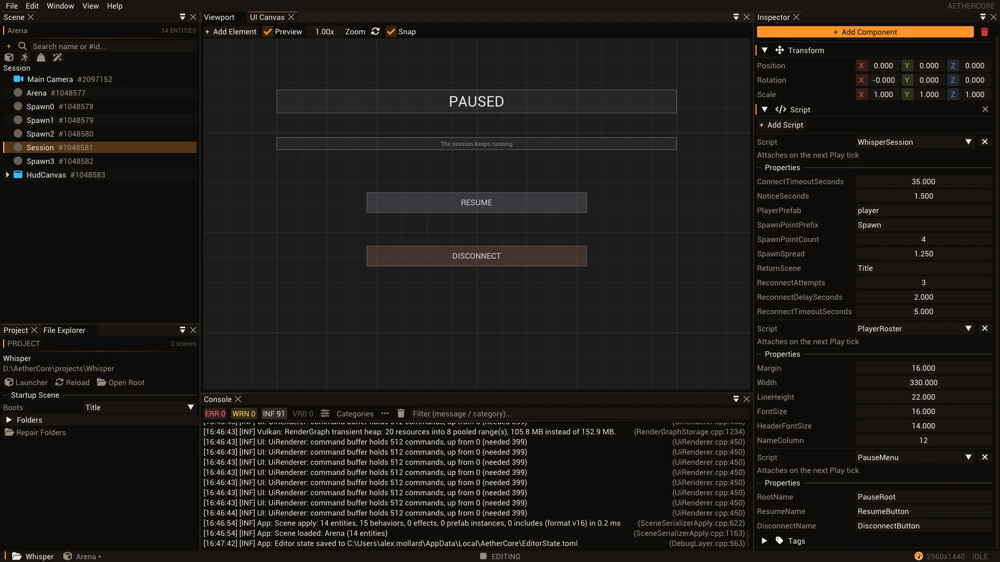
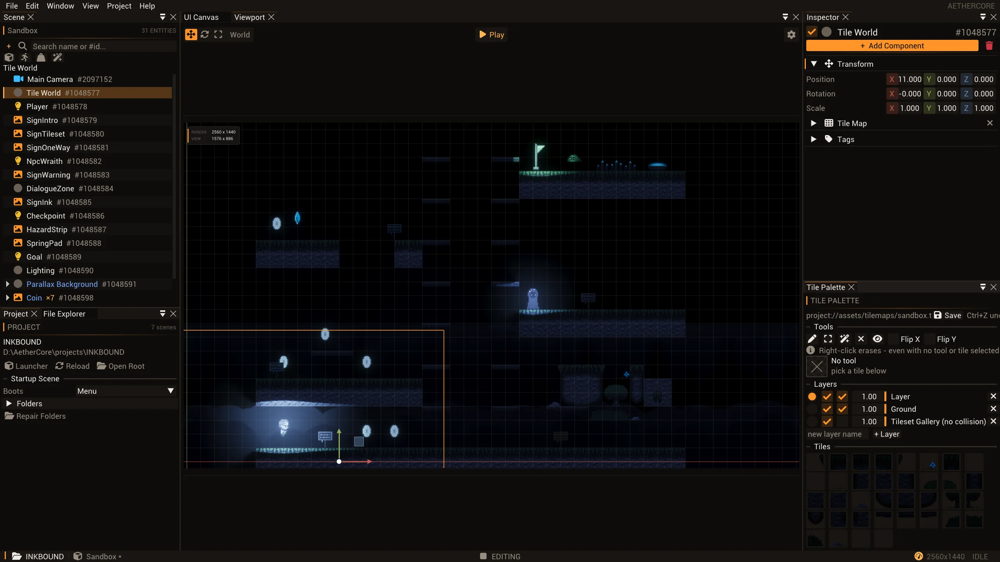

From inside the engine.
The decisions, boundaries and implementation details behind AetherCore. Each note follows a system into the source.

RENDERING / OWNERSHIP
A frame is not the world.
Why the renderer receives an extracted packet, what stays alive around it, and why CPU completion is not GPU completion.
Read the engineering note ↗
GAMEPLAY / MANAGED & NATIVE
What survives a C# reload?
A shared SDK identity, collectible assemblies and cached properties. Replacing code is not the same as preserving live state.
Read the engineering note ↗
EDITOR / PROTOCOL & FEEDBACK
Commands, not coordinates.
How MCP reaches the live editor, why mutations run on its main thread, and why a successful command still needs visual proof.
Read the engineering note ↗